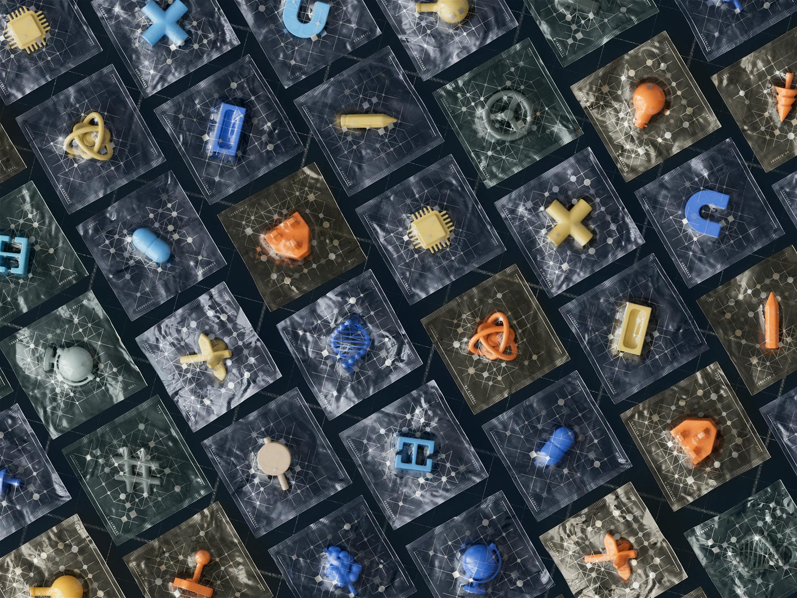

电费比员工贵的那一天
某科技公司的AI研究总监告诉我，他们今年做了一个内部测算：训练一个中等规模的视觉-语言模型，单次完整训练跑下来，电费是一个中级工程师两个月的薪水。这还是"中等规模"。他们不敢算GPT-5级别的。
这个感受，现在已经是AI行业的普遍焦虑。国际能源署的数据摆在那里：2024年，全球AI系统和数据中心合计耗电 415太瓦时——相当于英国这个工业国家一整年的用电量。
更让人不安的是增速。前沿模型训练的峰值电力需求，每年以 2.2到2.9倍 的速度膨胀。摩根士丹利预计，仅美国一国，2025到2028年之间的数据中心累计电力缺口就将达到 47吉瓦——大约相当于47座核电站的装机容量。不是缺一点点，是严重缺。
主流答案为什么不够
面对这个危机，行业目前有几条主流路线。
路线一：更高效的硬件。英伟达的H200、Blackwell架构，性能功耗比每代提升，Coherent Corp.刚刚突破了400 Gbps硅光子技术，把数据中心内部的数据传输效率拉上去。这条路是真实的进展，但它是"治标"——算力需求增长得比硬件效率快，你跑不赢。
路线二：量化和压缩。Google的TurboQuant算法（刚在ICLR 2026上发布）能大幅减少大语言模型推理时的内存占用。好用，但这是在现有范式内打磨——神经网络该有的问题，它还是都有。
这些路线有一个共同的前提假设：AI的核心范式，也就是"用大量数据训练神经网络来拟合规律"，是不可动摇的。在这个前提上，你能做的只是优化，不能做的是跨越。
塔夫茨大学的团队选择了质疑这个前提。
神经符号AI是什么
Matthias Scheutz是塔夫茨大学的Karol家族应用技术讲席教授。他的实验室研究了一个听起来有点"复古"的方向：神经符号AI（Neuro-Symbolic AI）。
复古，是因为"符号推理"是AI领域上世纪的主流范式。60年代到90年代，AI研究者相信智能可以用逻辑规则来表达。这条路最终碰壁：真实世界太复杂，穷举所有规则不现实，而且规则系统对"模糊输入"极度脆弱。然后神经网络崛起，靠数据拟合，不靠显式规则，大胜。
Scheutz的团队做的，是把这两种范式缝合起来：神经网络部分负责感知——看图像、理解语言指令；符号推理部分负责计划——给定目标，像下棋一样推导合理的操作步骤，而不是靠穷举试错。
让AI像人一样推理，不是让AI模拟人类的神经元，而是让AI运用人类发展了几千年的逻辑工具。

数字在说话
研究团队用河内塔积木搬运任务做测试——需要多步规划，不能只看当前状态，必须预判后续步骤，是验证推理能力的经典场景。
三块积木任务（训练过的场景）：神经符号VLA 95%，最强传统VLA基准 34%。
四块积木变体（从未见过的新场景）：神经符号VLA 78%，全部传统VLA 0%，一次也没成功。
后面这组数据比前面更重要。78% vs 0%，说的是泛化能力——面对新情况，谁还能工作。神经网络靠拟合，遇到分布外数据就崩；符号推理靠规则，规则在新场景里同样有效。
关键数据对比
（传统仅34%）
（相比传统模型）
（传统需36小时+）
的成功率
为什么这件事比它看起来的更重要
先说局限，再说重要性。这才是对的顺序。
局限是真实的。这项研究是在仿真环境中完成的，不是真实机器人物理部署。测试的任务是结构化的积木搬运——它需要推理，但不需要处理开放式、非结构化的真实世界情况。"100倍"这个说法在行业完整工作负载上会更复杂，研究者自己也承认这一点。
但重要性同样是真实的。
我们现在讨论的AI能源问题，根源在于：神经网络范式天生是数据密集、算力密集的。你可以在这个范式内无限优化，但优化的边际收益会递减，而任务复杂度的增长是非线性的。
神经符号AI提出的问题是：如果我们从范式层面重新设计，而不只是在现有范式内优化，会发生什么？
历史上有个类比。1960年代的编译器理论是当时计算机科学的核心焦虑——要让机器理解人类语言，靠穷举是不够的，要靠形式文法、靠推导规则。那套理论奠定了今天所有编程语言的基础。神经符号AI在机器人和物理AI领域做的，本质上是同样的事：把"人类擅长的抽象推理"显式地编入系统，而不是让神经网络隐式地学。

结构洞察：这不是一个技术故事，是一个范式故事
AI能源危机的讨论，目前停留在"怎么把现有AI做得更省电"。这是错误的框架。
更大的问题是：当前这一代AI，在能量效率上存在结构性缺陷。人类大脑的能耗大约是20瓦。GPT-5这个量级的模型，一次推理消耗的能量，大约是人类大脑回答同样问题的数万倍。这个差距不是工程优化能弥合的——它来自范式选择。
神经符号AI的因果链是这样的：
引入符号推理 → 机器人不需要靠反复试错来"记住"什么操作有效 → 训练样本量大幅下降 → 训练时间、能耗同步骤骤降 → 而因为推理是规则驱动的，泛化能力反而更强 → 遇到新场景不崩溃
这链条的每一步都有逻辑支撑，不是玄学。
⚠ 可证伪的假设：这套逻辑的前提是任务可以被良好结构化为符号逻辑能处理的形式。如果任务高度开放、高度歧义，符号推理的优势会消失。神经符号AI在结构化任务上大胜——但真实世界中有多少任务是高度结构化的？这个问题还没有完整答案。
接下来12个月，看这几个信号
信号一：ICRA 2026之后的跟进研究。这篇论文将在2026年6月1-5日于维也纳举行的IEEE国际机器人与自动化大会上正式发表。学术界是否有其他团队开始在不同任务类型上复现和验证，是判断这个方向能走多远的第一个指标。
信号二：物理AI商业化的速度。英伟达今年把"物理AI"列为战略重点。如果物理AI的商业化加速，对训练效率的需求会急剧增加，神经符号方向的价值就会被市场直接验证。
信号三：能源成本的压力。当电费成为AI公司的核心成本项时，任何能把能耗降一个量级的技术路线，都会获得远超学术界的关注。
如果你在2026年底还没有看到大型AI实验室宣布神经符号AI相关研究项目，那意味着这个方向在可扩展性上遇到了它目前还没有公开的问题。
行动指南
如果你是AI/机器人领域的工程师：关注Scheutz团队在ICRA 2026的完整论文，重点看消融实验（ablation study）。他们用的是什么符号推理框架？这个框架在你的任务场景里能不能适配？NeSy、DeepProbLog等开源框架现在就可以在小规模任务上试验——如果你的机器人任务有清晰的状态空间和目标，这个方向值得投入时间。
如果你是AI方向的投资人或产品决策者：在物理AI领域，"谁的模型参数量最大"可能不是最重要的竞争维度。"谁的模型能在真实部署环境里最省电、最泛化"，才是。效率就是竞争力，在AI能源成本继续膨胀的2026年，这个判断会越来越清晰。
如果你是对技术感兴趣的普通读者：记住一件事就够了——AI现在的能耗问题，不是"AI越来越厉害的必然代价"。这是一个范式选择的结果，而范式是可以改变的。